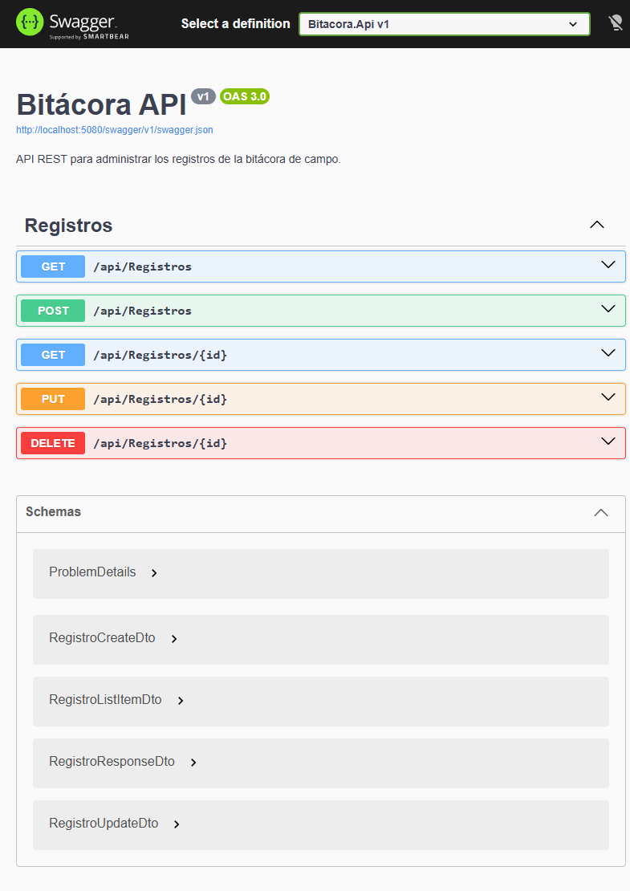

Regla: todas las capas dependen hacia el dominio. El dominio no conoce a ningún otro proyecto.

Coleccion: docs/Bitacora.postman_collection.json
Entorno: docs/Bitacora.postman_environment.json (variable baseUrl).
| Integrante | Número de cuenta | Responsabilidad |
|---|---|---|
| Angel Manuel Rivera | 202330010471 | Estructura de la solucion, proyectos y referencias. |
| Anthony Joel Gonzales Juárez | 202310010114 | Entidad de dominio y DTOs con validaciones. |
| Brayan wilfredo Torres aguilar | 201820030041 | Repositorio EF Core, DbContext y migraciones. |
| Johan Moises Lopez Moran | 202220010502 | Controladores, middleware de errores y configuracion Swagger. |
| Luis David Diaz Medina | 202210010189 | Coleccion de Postman, README y documentacion. |